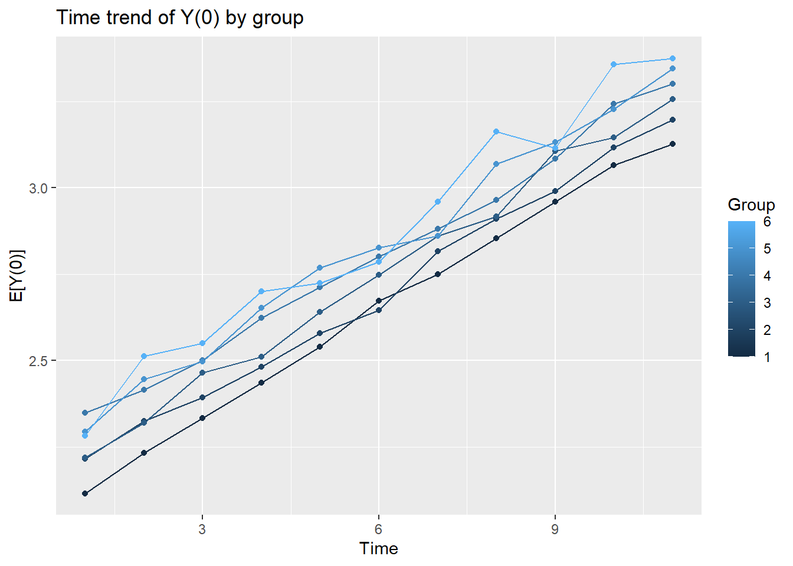
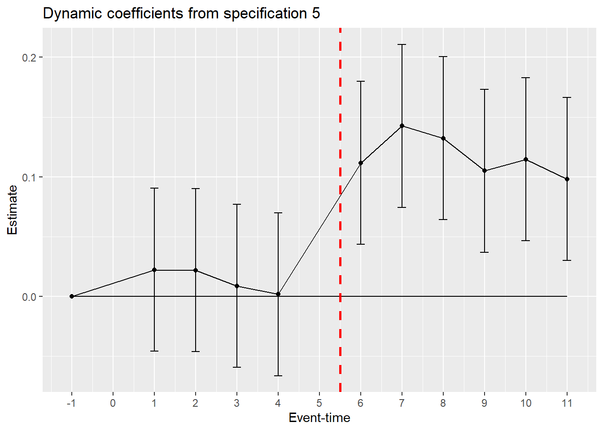
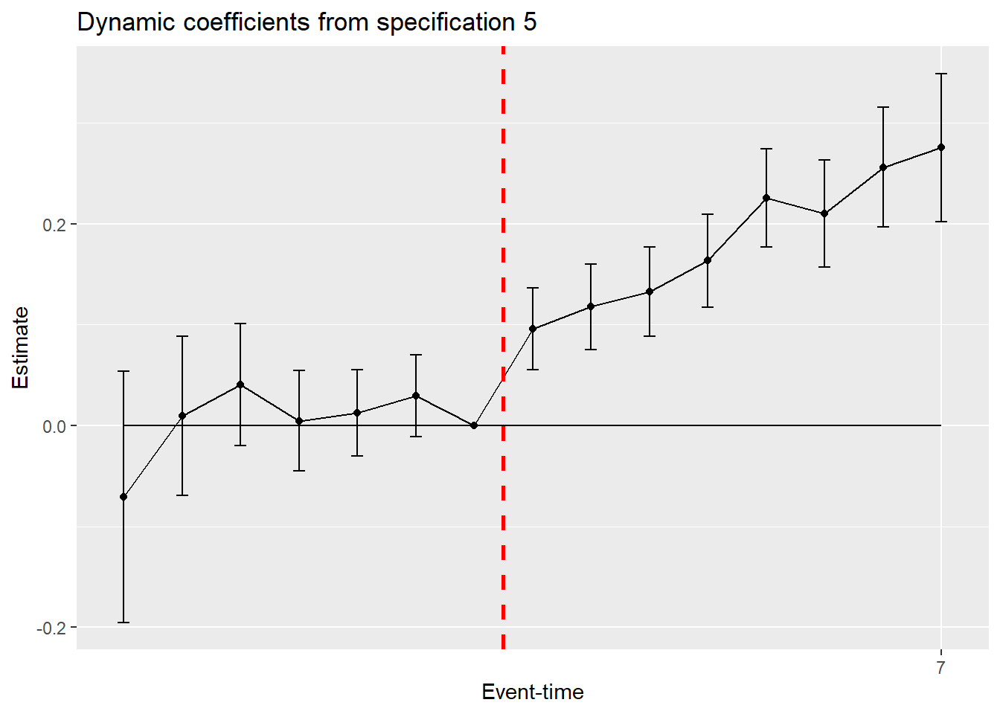
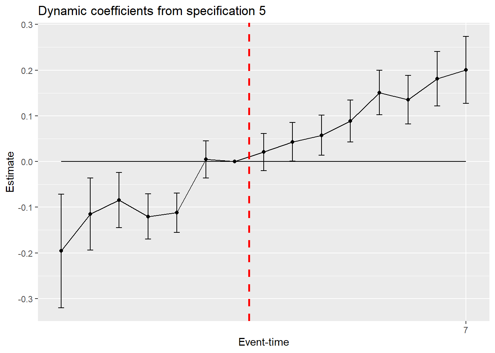
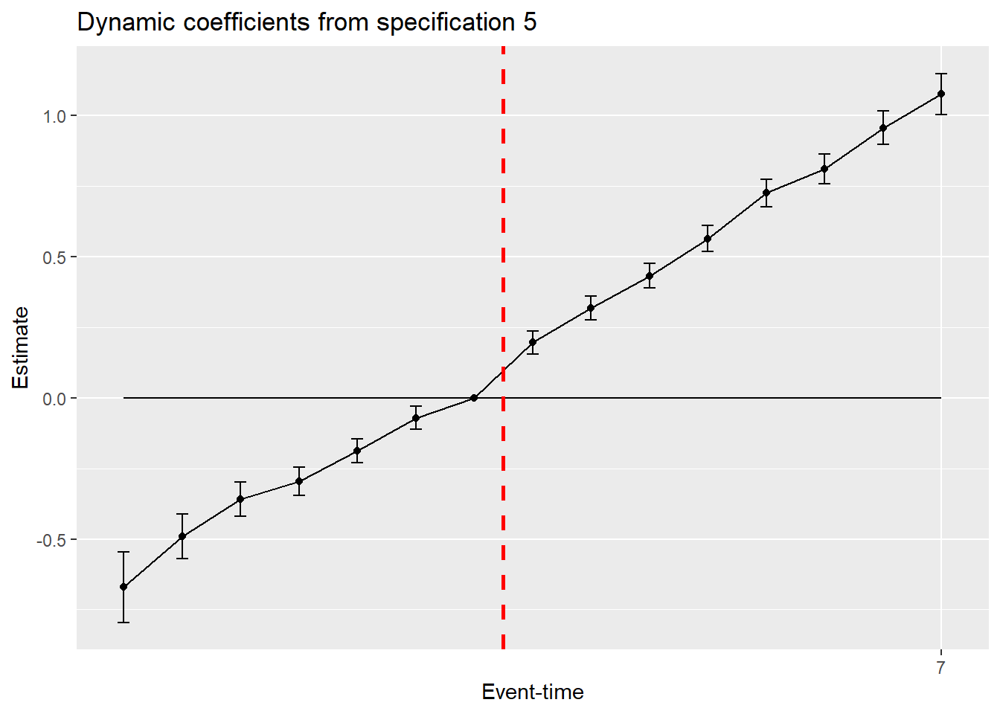

library(tidyverse)
library(modelsummary)
library(psych)
library(plm)
library(broom)Seminar 3: Difference-in-Differences
1 Required R Packages
2 Learning Objectives
In this seminar you will:
- estimate dynamic difference-in-differences models and plot coefficients (with standard errors);
- evaluate the significance of cohort and unit fixed-effects;
- observe how estimators react to dynamic treatment effects, pre-emptive behaviour, and failure of parallel trends;
- and explore the impact of cohort heterogeneity and how to resolve it.
3 Motivation
A quick examination of the applied literature will reveal the wide range of (linear regression) model specifications used to estimate the average treatment effect of the treated (ATT) of a (natural) experiment. Beyond differences in notation, this variation exists for number of important reasons:
- data: repeated cross-sections or panel data; more than two periods of observation;
- level of assignment: individual or group/cohort;
- timing of assignment: simultaneous or staggered; absorbing or alternating; presence of a never-treated control;
- assumptions regarding the treatment effect: static or dynamic; homogeneous or heterogeneous
For example, consider a setting where you have multiple periods of data both before and after treatment and the treatment was assigned at simultaneously at the unit level. The following model specification, with both unit and time FEs,
\[ Y_{it} = \alpha_i + \delta_t + \beta D_{i}\cdot \mathbf{1}\{t\geq t_0\} + \varepsilon_{it} \] assumes that you have longitudinal data. You cannot estimate this model with repeated cross-sections, since each unit is observed once and the unit FEs will explain all the variation in \(Y\). With repeated cross-sections, you would have to estimate,
\[ Y_{it} = \alpha + \psi D_i + \delta_t + \beta D_{i}\cdot \mathbf{1}\{t\geq t_0\} + \varepsilon_{it} \]
Moreover, by specifying a model that estimates a single post-treatment coefficient, you are implicitly making certain assumptions about the dynamics of the ATT. Afterall, if you believed that the treatment effect varied over time, why would you need estimate a dynamic specification; for example,
\[ Y_{it} = \alpha_i + \delta_t + \sum_{j\neq t_0-1} \beta_j D_{i}\cdot \mathbf{1}\{t-t_0=j\} + \varepsilon_{it} \]
The dynamic specification would allow you to test for parallel trends or anticipatory behaviour.
In this seminar we will explore how to match the model specification to the experimental and empirical setting as well as the implications of getting this wrong.
4 Setup
We will simulate a panel (longitudinal) dataset in long-form. In long-form, each row-observation in the dataset represents a unit ($i$) in a single time period (\(t\)). There will be \(t\) row-observations of each unit \(i\) in a balanced panel. Panel data can also be arranged in wide-form, where each unit appears once and repeated observations are arranged as separate columns. To estimate a linear regression model, the data must be in long-form.1
Start by setting a seed. This ensures that all random number generators in this programme are replicable.
set.seed(27310)n <- 2000
t <- 114.1 Generate data
Generate an empty dataframe with 1000 observations.
df <- data.frame(matrix(ncol = 0, nrow = n))Create an ID variable equal to the row number.
df$id <- 1:nrow(df)Split ID’s into different sized treatment groups.
df$group <- cut(df$id,
breaks=c(0,500,1000,1400,1700,1900,2000),
right=TRUE
)
df$group <- as.integer(df$group)The last step converts the categorical variable into an integer.
Duplicate the ID’s for each period.
data <- df
i <- 1
while (i<t) {
data <- rbind(data,df)
i <- i+1
}Generate time variable.
data <- data %>%
group_by(id) %>%
mutate(time = 1:t) %>%
arrange(id,time)We are going to generate the underlying \(Y(0)\) variable based on a two-way FEs structure:
\[ Y_{it}(0) = \alpha_i + \delta_t + \varepsilon_{it} \] with,
\(\alpha = 1+0.05\cdot (c-1)\) where \(c\) is a individual’s cohort. This ensures level differences across treatment groups.
\(\delta_t = 1 +0.1\cdot (t-1)\), which will generate a linear time trend.
\(\varepsilon_{it}\sim_{iid} \; N(0,\sigma)\)
Set values
sigma <- 0.55
data <- data %>%
mutate(
alpha = 1 + 0.05*group,
delta = 1 + 0.1*time,
epsilon = rnorm(n(),0,sigma),
y0 = alpha + delta + epsilon
)The data we have generated has parallel trends across groups. We demonstrate this fact by plotting the average of the outcome for each group, over time.
# Compute group averages
data_avg <- data %>%
group_by(time, group) %>%
summarize(avg_y0 = mean(y0), .groups = 'drop')
# Plot the time trend of group averages
ggplot(data_avg, aes(x = time, y = avg_y0, color = group, group = group)) +
geom_line() + # Add lines for each group
geom_point() + # Add points to show averages
labs(
title = "Time trend of Y(0) by group",
x = "Time",
y = "E[Y(0)]",
color = "Group"
) 
5 Case 1: Dynamic Difference-in-Difference
We begin by examining the instance where half of the sample are treated in period 6 (groups 1 and 2), while the remaining sample is never treated.
- Let’s create the following three dummy variables:
- \(D_i = \mathbf{1}\{c\leq 2\}\): indicator for treated group (time-invariant)
- \(T_t = \mathbf{1}\{t>=6\}\): indicator for post treatment periods
- \(D_i\cdot T_t\): indicator for treated group, after treatment (time-varying)
data1 <- data
data1 <- data1 %>%
mutate(trtgrp = (group<=2)*1,
post = (time>=6)*1,
trtpost = trtgrp*post,
trttime = as.factor(trtgrp*time),
trttimepost = as.factor(trtgrp*time*post))First, we will generate data based on a static, homogeneous treatment effect: \(\tau = 0.2\).
data1 <- data1 %>%
mutate(yobs = y0 + trtpost*0.1)Given this DGP, there are a few specifications we can estimate.
Simple (i.e. 2-group-2-period) specification \[ Y_{it} = \alpha + \psi D_i + \delta T_t + \beta D_{i}\cdot T_t + \varepsilon_{it} \]
Static specification with time FEs, but no unit FEs \[ Y_{it} = \alpha + \psi D_i + \delta_t + \beta D_{i}\cdot T_t + \varepsilon_{it} \]
Static specification with two-way FEs \[ Y_{it} = \alpha_i + \delta_t + \beta D_{i}\cdot T_t + \varepsilon_{it} \]
Semi-dynamic specification (with group or unit FEs) \[ Y_{it} = \alpha_i + \delta_t + \sum_{j>5} \beta_j D_{i}\cdot \mathbf{1}\{t-6=j\} + \varepsilon_{it} \]
Dynamic specification (with group or unit FEs) \[ Y_{it} = \alpha_i + \delta_t + \sum_{j\neq 5} \beta_j D_{i}\cdot \mathbf{1}\{t-6=j\} + \varepsilon_{it} \]
reg1 <- lm(yobs ~ trtpost + trtgrp + post, data=data1)
reg2 <- plm(yobs ~ trtpost + trtgrp, data=data1, index=c("id","time"), model = "within", effect = "time")
# Alternative programming (computes different R2):
#reg2 <- lm(yobs ~ trtpost + trtgrp + as.factor(time), data=data1)
reg3 <- plm(yobs ~ trtpost, data=data1, index=c("id","time"), model = "within", effect = "twoways")
modelsummary(list("(1)"=reg1,"(2)"=reg2, "(3)"=reg3), stars=c('*'=.1, '**'=.05,'***'=.01), coef_omit=-(2), gof_map = c("nobs", "r.squared", "rmse"), title = "Static specifications 1-3")| (1) | (2) | (3) | |
|---|---|---|---|
| * p < 0.1, ** p < 0.05, *** p < 0.01 | |||
| trtpost | 0.106*** | 0.106*** | 0.106*** |
| (0.016) | (0.015) | (0.015) | |
| Num.Obs. | 22000 | 22000 | 22000 |
| R2 | 0.221 | 0.006 | 0.003 |
| RMSE | 0.57 | 0.55 | 0.52 |
The dynamic specifications,
data1 <- data1 %>%
mutate(btrtgrp = as.factor(trtgrp),
btrttime = as.factor(trttime),
btrttime = relevel(trttime,"5"),
btrttimepost = as.factor(trttimepost)
)
reg4a <- plm(yobs ~ btrtgrp + btrttimepost, data=data1, index=c("id","time"), model = "within", effect = "time")
reg4b <- plm(yobs ~ btrttimepost, data=data1, index=c("id","time"), model = "within", effect = "twoways")
modelsummary(list("(4a)"=reg4a,"(4b)"=reg4b), stars=c('*'=.1, '**'=.05,'***'=.01), coef_omit=("btrtgrp"), gof_map = c("nobs", "r.squared", "rmse"), title = "Semi-dynamic specification 4")| (4a) | (4b) | |
|---|---|---|
| * p < 0.1, ** p < 0.05, *** p < 0.01 | ||
| btrttimepost6 | 0.101*** | 0.101*** |
| (0.027) | (0.027) | |
| btrttimepost7 | 0.132*** | 0.132*** |
| (0.027) | (0.027) | |
| btrttimepost8 | 0.121*** | 0.121*** |
| (0.027) | (0.027) | |
| btrttimepost9 | 0.094*** | 0.094*** |
| (0.027) | (0.027) | |
| btrttimepost10 | 0.104*** | 0.104*** |
| (0.027) | (0.027) | |
| btrttimepost11 | 0.087*** | 0.087*** |
| (0.027) | (0.027) | |
| Num.Obs. | 22000 | 22000 |
| R2 | 0.006 | 0.003 |
| RMSE | 0.55 | 0.52 |
reg5a <- plm(yobs ~ btrtgrp + btrttime, data=data1, index=c("id","time"), model = "within", effect = "time")
reg5b <- plm(yobs ~ btrttime, data=data1, index=c("id","time"), model = "within", effect = "twoways")
modelsummary(list("(5a)"=reg5a, "(5b)"=reg5b), stars=c('*'=.1, '**'=.05,'***'=.01), coef_omit=("btrtgrp"), gof_map = c("nobs", "r.squared", "rmse"), title = "Dynamic specification 5")| (5a) | (5b) | |
|---|---|---|
| * p < 0.1, ** p < 0.05, *** p < 0.01 | ||
| btrttime1 | 0.022 | 0.022 |
| (0.035) | (0.035) | |
| btrttime2 | 0.022 | 0.022 |
| (0.035) | (0.035) | |
| btrttime3 | 0.009 | 0.009 |
| (0.035) | (0.035) | |
| btrttime4 | 0.002 | 0.002 |
| (0.035) | (0.035) | |
| btrttime6 | 0.112*** | 0.112*** |
| (0.035) | (0.035) | |
| btrttime7 | 0.143*** | 0.143*** |
| (0.035) | (0.035) | |
| btrttime8 | 0.132*** | 0.132*** |
| (0.035) | (0.035) | |
| btrttime9 | 0.105*** | 0.105*** |
| (0.035) | (0.035) | |
| btrttime10 | 0.115*** | 0.115*** |
| (0.035) | (0.035) | |
| btrttime11 | 0.098*** | 0.098*** |
| (0.035) | (0.035) | |
| Num.Obs. | 22000 | 22000 |
| R2 | 0.006 | 0.003 |
| RMSE | 0.55 | 0.52 |
However, with dynamic models it makes more sense to plot the coefficients in a graph. Let us quick create a function that will graph the plots.
eventplot <- function(model,start,end,treat) {
coef_model <- tidy(model, conf.int = TRUE)
# extract event-times from coefficient labels
coef_model$time <- as.integer(substr(coef_model$term,9,10))
#append row with estimate=0 for base period
coef_0 <- data.frame(term = NA, estimate = 0, std.error = NA, statistic = NA, p.value = NA, conf.low = NA, conf.high = NA, time = -1)
coef_model <- rbind(coef_model,coef_0)
coef_model <- arrange(coef_model,time)
# plot graph
graph <- ggplot(coef_model, aes(x = time, y = estimate)) +
geom_point() + # Plot the point estimates
geom_line() + # Connect point estimates with line
geom_line(y=0) + # Horizontal line
geom_vline(xintercept = treat-0.5, color = "red", linetype = "dashed", size = 1) +
geom_errorbar(aes(ymin = conf.low, ymax = conf.high), width = 0.2) + # Add error bars for the confidence intervals
labs(
title = "Dynamic coefficients from specification 5",
x = "Event-time",
y = "Estimate"
) +
scale_x_continuous(breaks = -start:end, labels = -start:end)
return(graph)
}Let’s try this specification 5, with unit FEs.
eventplot(reg5b,1,11,6)Warning: Using `size` aesthetic for lines was deprecated in ggplot2 3.4.0.
ℹ Please use `linewidth` instead.

6 Case 2: Staggered Intervention
Next, we will examine the staggered intervention case. Group 1 will remain untreated, while groups 2-6 are treated at separated times. We will use the groups as separate cohorts with treatment times given by,
\[ S_c \in \{\infty,4,5,6,7,8\} \]
We begin by assigning each of the groups in the simulated dataset a cohort value, as above.
data2 <- data %>%
mutate(cohort = ifelse(group>1,group+2,NA),
etime = time-cohort,
)
table(data2$etime, data2$cohort, useNA = "ifany")
4 5 6 7 8 <NA>
-7 0 0 0 0 100 0
-6 0 0 0 200 100 0
-5 0 0 300 200 100 0
-4 0 400 300 200 100 0
-3 500 400 300 200 100 0
-2 500 400 300 200 100 0
-1 500 400 300 200 100 0
0 500 400 300 200 100 0
1 500 400 300 200 100 0
2 500 400 300 200 100 0
3 500 400 300 200 100 0
4 500 400 300 200 0 0
5 500 400 300 0 0 0
6 500 400 0 0 0 0
7 500 0 0 0 0 0
<NA> 0 0 0 0 0 5500Note, these two variables have missing values corresponding to the never-treated group. From a programming perspective we do not want any variables in the estimator to have missing values. For this reason, we will create a set of event-time variables that will be used in the estimator that have no missing values. We will do so by replacing NT treated value of event-time to the chosen based period.
base <- -1
data2$trtgrp <- data2$cohort
data2$trtgrp[is.na(data2$trtgrp)] <- base
# cross-tabulate treatment-group and cohort
table(data2$trtgrp, data2$cohort, useNA = "ifany")
4 5 6 7 8 <NA>
-1 0 0 0 0 0 5500
4 5500 0 0 0 0 0
5 0 4400 0 0 0 0
6 0 0 3300 0 0 0
7 0 0 0 2200 0 0
8 0 0 0 0 1100 0data2$trttime <- data2$etime
data2$trttime[is.na(data2$trttime)] <- base
# cross-tabulate event-time and cohort
table(data2$trttime, data2$cohort, useNA = "ifany")
4 5 6 7 8 <NA>
-7 0 0 0 0 100 0
-6 0 0 0 200 100 0
-5 0 0 300 200 100 0
-4 0 400 300 200 100 0
-3 500 400 300 200 100 0
-2 500 400 300 200 100 0
-1 500 400 300 200 100 5500
0 500 400 300 200 100 0
1 500 400 300 200 100 0
2 500 400 300 200 100 0
3 500 400 300 200 100 0
4 500 400 300 200 0 0
5 500 400 300 0 0 0
6 500 400 0 0 0 0
7 500 0 0 0 0 0data2$trttimepost = data2$trttime
data2$trttimepost[(data2$trttimepost<0)] <- base
# cross-tabulate event-time and post-treatment-event-times
table(data2$trttimepost, data2$etime, useNA = "ifany")
-7 -6 -5 -4 -3 -2 -1 0 1 2 3 4 5 6 7
-1 100 300 600 1000 1500 1500 1500 0 0 0 0 0 0 0 0
0 0 0 0 0 0 0 0 1500 0 0 0 0 0 0 0
1 0 0 0 0 0 0 0 0 1500 0 0 0 0 0 0
2 0 0 0 0 0 0 0 0 0 1500 0 0 0 0 0
3 0 0 0 0 0 0 0 0 0 0 1500 0 0 0 0
4 0 0 0 0 0 0 0 0 0 0 0 1400 0 0 0
5 0 0 0 0 0 0 0 0 0 0 0 0 1200 0 0
6 0 0 0 0 0 0 0 0 0 0 0 0 0 900 0
7 0 0 0 0 0 0 0 0 0 0 0 0 0 0 500
<NA>
-1 5500
0 0
1 0
2 0
3 0
4 0
5 0
6 0
7 0Using the same underlying two-way FEs DGP, we generate a new dataset that includes a dynamic treatment effect.
\[ Y^{obs}_{it} = \alpha_i + \delta_t + \sum_{s}\tau(s)\mathbf{1}\{t-S_i=s\} + \varepsilon_{it} \] We will allow the treatment effect to increase with (event) time, but remain homogeneous across units/cohorts: \(\tau(s) = 0.1 + 0.025\cdot s\) for \(s\geq 0\); where \(s\) is event-time. Note, we have ruled out anticipation.
data2 <- data2 %>%
mutate(yobs1 = y0 + (0.1 + 0.025*trttime)*(trttime>=0)
)The dynamic specifications,
# create factor variables to use in plm() and set base category
data2 <- data2 %>%
mutate(btrtgrp = as.factor(trtgrp),
btrtgrp = relevel(btrtgrp,ref = "-1"),
btrttime = relevel(as.factor(trttime), "-1"),
btrttimepost = relevel(as.factor(trttimepost),"-1")
)
reg6a <- plm(yobs1 ~ btrtgrp + btrttimepost, data=data2, index=c("id","time"), model = "within", effect = "time")
reg6b <- plm(yobs1 ~ btrttimepost, data=data2, index=c("id","time"), model = "within", effect = "twoways")
modelsummary(list("6(a)"=reg6a,"6(b)"=reg6b), stars=c('*'=.1, '**'=.05,'***'=.01), gof_map = c("nobs", "r.squared", "rmse"), title = "Semi-dynamic specifications")| 6(a) | 6(b) | |
|---|---|---|
| * p < 0.1, ** p < 0.05, *** p < 0.01 | ||
| btrtgrp4 | 0.065*** | |
| (0.016) | ||
| btrtgrp5 | 0.111*** | |
| (0.015) | ||
| btrtgrp6 | 0.172*** | |
| (0.015) | ||
| btrtgrp7 | 0.192*** | |
| (0.015) | ||
| btrtgrp8 | 0.230*** | |
| (0.019) | ||
| btrttimepost0 | 0.083*** | 0.083*** |
| (0.018) | (0.018) | |
| btrttimepost1 | 0.105*** | 0.105*** |
| (0.019) | (0.019) | |
| btrttimepost2 | 0.120*** | 0.120*** |
| (0.020) | (0.020) | |
| btrttimepost3 | 0.151*** | 0.151*** |
| (0.021) | (0.021) | |
| btrttimepost4 | 0.212*** | 0.212*** |
| (0.022) | (0.022) | |
| btrttimepost5 | 0.197*** | 0.197*** |
| (0.025) | (0.025) | |
| btrttimepost6 | 0.243*** | 0.243*** |
| (0.028) | (0.028) | |
| btrttimepost7 | 0.262*** | 0.262*** |
| (0.036) | (0.036) | |
| Num.Obs. | 22000 | 22000 |
| R2 | 0.037 | 0.006 |
| RMSE | 0.55 | 0.52 |
reg7a <- plm(yobs1 ~ btrtgrp + btrttime, data=data2, index=c("id","time"), model = "within", effect = "time")
reg7b <- plm(yobs1 ~ btrttime, data=data2, index=c("id","time"), model = "within", effect = "twoways")
modelsummary(list("7(a)"=reg7a, "7(b)"=reg7b), stars=c('*'=.1, '**'=.05,'***'=.01), gof_map = c("nobs", "r.squared", "rmse"), title = "Dynamic specifications")| 7(a) | 7(b) | |
|---|---|---|
| * p < 0.1, ** p < 0.05, *** p < 0.01 | ||
| btrtgrp4 | 0.051*** | |
| (0.019) | ||
| btrtgrp5 | 0.098*** | |
| (0.019) | ||
| btrtgrp6 | 0.157*** | |
| (0.019) | ||
| btrtgrp7 | 0.177*** | |
| (0.021) | ||
| btrtgrp8 | 0.223*** | |
| (0.025) | ||
| btrttime-3 | 0.013 | 0.013 |
| (0.022) | (0.022) | |
| btrttime-2 | 0.030 | 0.030 |
| (0.021) | (0.021) | |
| btrttime0 | 0.096*** | 0.096*** |
| (0.021) | (0.021) | |
| btrttime1 | 0.118*** | 0.118*** |
| (0.022) | (0.022) | |
| btrttime2 | 0.133*** | 0.133*** |
| (0.023) | (0.023) | |
| btrttime3 | 0.163*** | 0.163*** |
| (0.023) | (0.023) | |
| btrttime4 | 0.226*** | 0.226*** |
| (0.025) | (0.025) | |
| btrttime5 | 0.210*** | 0.210*** |
| (0.027) | (0.027) | |
| btrttime6 | 0.256*** | 0.256*** |
| (0.030) | (0.030) | |
| btrttime7 | 0.276*** | 0.276*** |
| (0.037) | (0.037) | |
| btrttime-4 | 0.005 | 0.005 |
| (0.025) | (0.025) | |
| btrttime-5 | 0.041 | 0.041 |
| (0.031) | (0.031) | |
| btrttime-6 | 0.010 | 0.010 |
| (0.040) | (0.040) | |
| btrttime-7 | -0.071 | -0.071 |
| (0.063) | (0.063) | |
| Num.Obs. | 22000 | 22000 |
| R2 | 0.037 | 0.006 |
| RMSE | 0.55 | 0.52 |
We can use the same function to plot the last model.
eventplot(reg7b,-7,7,0)
7 Case 3: Failure of parallel trends and anticipation
Let’s generate an alternative observed outcome where the units respond to the treatment two periods before treatment is assigned.
data2 <- data2 %>%
mutate(yobs2 = y0 + (0.1 + 0.025*(trttime+2))*(trttime+2>=0)*(trtgrp>0)
)
# the last condition ensures that never-treated are excluded
reg8 <- plm(yobs2 ~ btrttime, data=data2, index=c("id","time"), model = "within", effect = "twoways")
eventplot(reg8,-7,7,0)
And a second instance where parallel trends do not hold. Recall, the trend component of \(Y(0)\) was given by \(\delta_t = 1 +0.1\cdot (t-1)\). Let’s remove the trend for the never-treated group.
data2 <- data2 %>%
mutate(yobs3 = y0 -0.1*(time-1)*(trtgrp==-1) + (0.1 + 0.025*trttime)*(trttime>=0)
)
# the last condition ensures that never-treated are excluded
reg9 <- plm(yobs3 ~ btrttime, data=data2, index=c("id","time"), model = "within", effect = "twoways")
eventplot(reg9,-7,7,0)
8 Case 4: Cohort-specific ATT
INCOMPLETE
Footnotes
You can reshape data from wide to long (or vice versa) in STATA using the
reshapecommand. In R this can be done using thereshape2package.↩︎